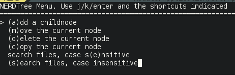

Vim for PHP Developers
Why on earth would any sane person use Vim for PHP development ? Is it still relevant in the days of full blown IDE's ?
Ike Devolder
@BlackIkeEagle
Senior Webdeveloper - Studio Emma
Archlinux Trusted User
Vim user :-)
The Goal of this presentation
- Touch some basics
- Show some PHP specific things
- Inspire you to research more about Vim

What is Vim ?
“Vim is a highly configurable text editor built to enable efficient text editing. It is an improved version of the vi editor distributed with most UNIX systems.”
“Vim is often called a "programmer's editor," and so useful for programming that many consider it an entire IDE. It's not just for programmers, though. Vim is perfect for all kinds of text editing, from composing email to editing configuration files.”
What is Vim NOT ?
“Vim isn't an editor designed to hold its users' hands. It is a tool, the use of which must be learned.”
“Vim isn't a word processor. Although it can display text with various forms of highlighting and formatting, it isn't there to provide WYSIWYG editing of typeset documents. (It is great for editing TeX, though.)”
“Vim isn't a desktop environment. If you want integrated twitter, email, webbrowser, ircclient, ... use emacs.”
Why Vim for PHP development
Vim has everything (or almost) a PHP developer needs.
We just need to unlock or find the “right” feature.
Once you know it it's FAST!
Modal editor
Wtf, modal editor?
A modal editor has different modes of operation.
- Normal mode
- Insert mode
- Visual mode
Normal mode
In this mode everything you “type” is interpreted as a command you give.
Insert mode
This is what you are used to, start typing and you are adding text
- “i” => insert mode at current position
- “I” => insert mode at beginning of line
- “a” => insert mode at next position (appending)
- “A” => insert mode at end of line (appending)
- “o” => insert mode open new line after current line
- “O” => insert mode open new line before current line
- “r” => insert mode replace current character
- “R” => insert mode start replace from current character
Visual mode
This mode could be compared to selecting some text
- “v” => highlight continuous text from current position
- “V” => highlight complete lines
- “ctrl + v” => highlight block mode (columns)
To define a visual highlight you can use all movement keys
Modes demo
Moving around without mouse and without arrow keys
If you really want you can move around with your mouse and with your arrow keys
Basic movement

Faster movement
- by word
- “w,e” => forward beginning or end of word
- “W,E” => forward beginning or end of word (context)
- “b,ge” => backward beginning or end of word
- line
- “0” => beginning of line
- “^” => beginning of line (non whitespace char)
- “$” => end of line
Faster movement
- “gg” => beginning of document
- “G” => end of document
- “{N}G” => goto linenumber {N}
- “ctrl + f” => 'scroll' page forward
- “ctrl + b” => 'scroll' page backward
Search movement
- “/{search}” => search forward for {search}
- “?{search}” => search backard for {search}
- “f{char}” => goto first occurence of {char} on this line
- “F{char}” => backward of “f”
- “t{char}” => goto char before first occurence of {char} on line
- “T{char}” => reverse of “t”
Movement demo

https://bitbucket.org/tednaleid/vim-shortcut-wallpaper
Commands
Wtf ? Commands, this is just a text editor, why don't you just let me type in some text
Common commands
- Quit: “:q”
- Quit and I don't care about the changes: “:q!”
- Quit everything: “:qa”
- Write: “:w”
- Write and quit: “:wq”
“:help editing.txt”
Copy / paste
- Copy: “y” (called yank)
- Cut: “d” (delete)
- Cut Characters: “x” (cut after); “X” (cut before)
- Paste: “p”
“:help change.txt”
Text Manipulation
- Replace current selection: “r”
- Replace from current postion: “R”
- Substitute (search and replace):
“:s/{pattern}/{substitution}/{flags}” - Flip the case of character: “~”
- Increment number: “ctrl + a”
- Decrement number: “ctrl + x”
“:help change.txt”
Undo / Redo
- Undo: “u”
- Undo last change on this line: “U”
- Redo: “ctrl + r”
“:help undo.txt”
Quantifiers
Quantifiers can be used to 'extend' the reach of a command
- Move to the 5th word: “5w”
- Yank the next 3 lines: “3yy”
- Delete up til the end of the 3rd word form here: “d3e”
Ranges
Most commands support ranges, ranges are defined like
“:{start},{end} {command}”
- Visual selection: “:'<,'>”
- All lines in file: “:%”
- From line 4 to 10; “:4,10”
“:help range”
Formatting text
- Center align: “:ce {width}”
- Right align: “:ri {width}”
- Left align: “:le {indent}”
- Format paragraph: “gqip”
- Format current selection: “gq”
“:help formatting” “:help text-objects”
Commands demo
Still no word about PHP ?!?

No PHP yet !
Stuff for coders, what do we want?
- syntax highlighting
- completion
- search in files
- syntax errors
- project based configuration
- file/folder navigation
Many of the things we need are available out of the box
syntax highlighting
If you are getting on a ubuntu server, first action:
apt-get install vim
In most linux distributions vim comes with syntax highlighting enabled by default.
In many distributions the default vim installed is a vi compatbile tiny version, install the full version!
completion
- “ctrl-x ctrl-f” file names
- “ctrl-x ctrl-l” whole lines
- “ctrl-x ctrl-i” current and included files
- “ctrl-x ctrl-k” words from a dictionary
- “ctrl-x ctrl-t” words from a thesaurus
- “ctrl-x ctrl-]” tags
- “ctrl-x ctrl-v” Vim command line
search in files
- “:grep {search} {infiles}”
- “:lgrep {search} {infiles}”
- “:vimgrep {search} {infiles}”
- “:lvimgrep {search} {infiles}”
- “:cnext” goto the next result
- “:cprevious” goto the previous result
The default search functions in Vim are fairly hard to use
syntax errors
You could manually abuse the makeprg setting in vim and set it to “php -l %” but when using PHP, html, javascript, ... you might want syntax errors for all of those languages.
project based configuration
We must explicitly add a configuration option to allow vim to load a .vimrc file from the directory you are starting vim from.
“:help exrc”
file/folder navigation
There is by default a file navigator built in in vim called netrw, if you have to use it, it does the job fine, but it is not really user frienly.
We can also easily navigate our files if we use tags.
OMG Vim is HARD!

Configure Vim
The configuration will be done in “~/.vimrc” and addidional plugins to make our lives easier go into “~/.vim”
Choose mode
Vim has a vi compatible mode or you can choose to use the no compatible mode to be able to use all Vim specific features
Backup rules
Vim creates a backup of every file you edit, it also keeps a “swap” file by default. Vim also keeps views around but I personally never saw one saved to disk.
Vim can also persist undo information.
By default all these files are stored next to the file you are editing, this can pollute your source tree.
Filetype
We have to enable syntax highlighting and filetype detection, most distributions already enable this by default.
Tabstop
Tabstop is going to define how the syntax indentation and tab key will behave.
Linenumbers
When we are programming knowing what line we are on
Colorscheme
And ofcourse we 'never' use the default colorscheme since we all think thatone is not good enough for us
Many more configuration possibilities
The ones mentioned before are “most” important to do our job
Demo configuration
Plugins will help us
What follows are a list of plugins I use, that does in no way mean those are the best. When you use a plugin make sure you feel an improvement in your workflow.
(C)tags
(C)tags is not really a plugin, it is a built in feature of Vim. This built in feature can already start making our lives much easier.
There are plugins to generate your tagfiles on save, or on quit. I personally generate them whenever I see fit.
- Jump to tag under cursor: “ctrl+]”
- Go back to originating file: “ctrl+t”
“:help tagsrch.txt”
Plugin manager
In the old days you usually installed plugins by extracting a zipfile in your “~/.vim” folder. Luckily, these days are over, now we have several plugins ;) that manage our plugins.
Some “plugin managers”:
The NERD Tree
The NERD Tree is a tree like file explorer for vim
ctrlp.vim
In short this is a fuzzy typed fast filefinder

ack.vim
As you could guess the plugin uses the ack command to search in code files.

NERDtree + Ack.vim
NERDTree Ack is an extension for nerdtree which adds a few menu items to search with ack
Sauce for Vim
Sauce is a “project” like plugin, it creates an extra project specific vimrc file where you can keep the location of the project, maybe indenting options, ...
VIM bufferlist
VIM bufferlist gives you a list of open buffers (files).

supertab
Supertab is a plugin that helps you to use completion in insert mode, when you press

Syntastic
Syntastic is a syntax checker plugin, it will run a syntax check on the open file.

tagbar
Tagbar displays a summary of your class or file. It lists classes, paramters and methods.
NERDcommenter
NERDcommenter helps you to quickly add comments to a line or multiple lines.
PHP Documentor for Vim
PHP Documentor for Vim is a plugin to easily create docblocks on your classes, parameters and methods.
php_getset
php_getset creates getter and setter methods from the paramters selected in your class.

vim-fugitive
Fugitive is a git wrapper for vim, you can run practically every git command from fugitive.
vdebug
Vdebug is a debugger for Vim. Every debugger speaking DBGP protocol can be used. Xdebug speaks DBGP ;)
Questions ?
Usefull resources
- http://www.vim.org/
- http://vim.wikia.com/wiki/Vim_Tips_Wiki
- http://vimcasts.org/
- my vimfiles: https://github.com/BlackIkeEagle/vimfiles
Thanks.
https://joind.in/10940